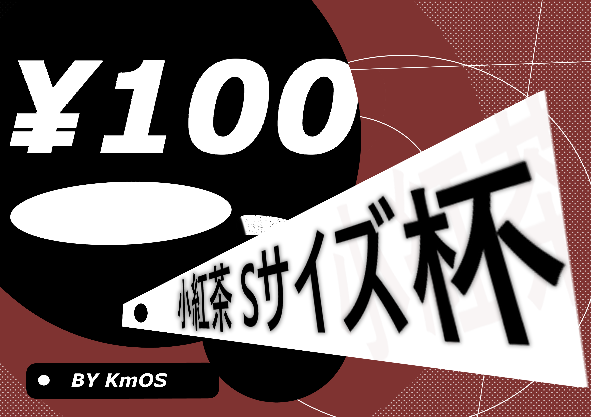
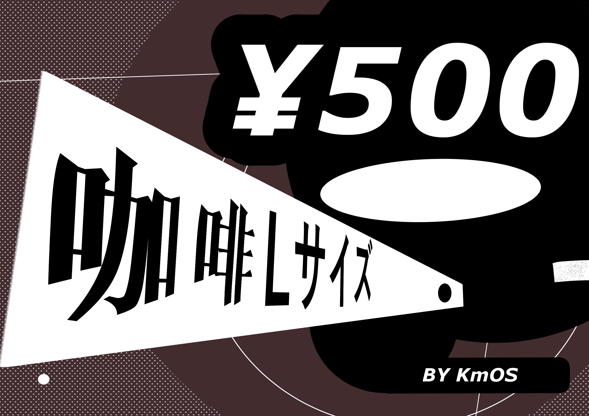
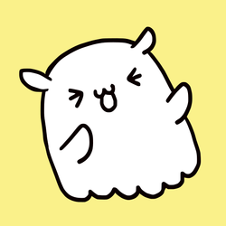
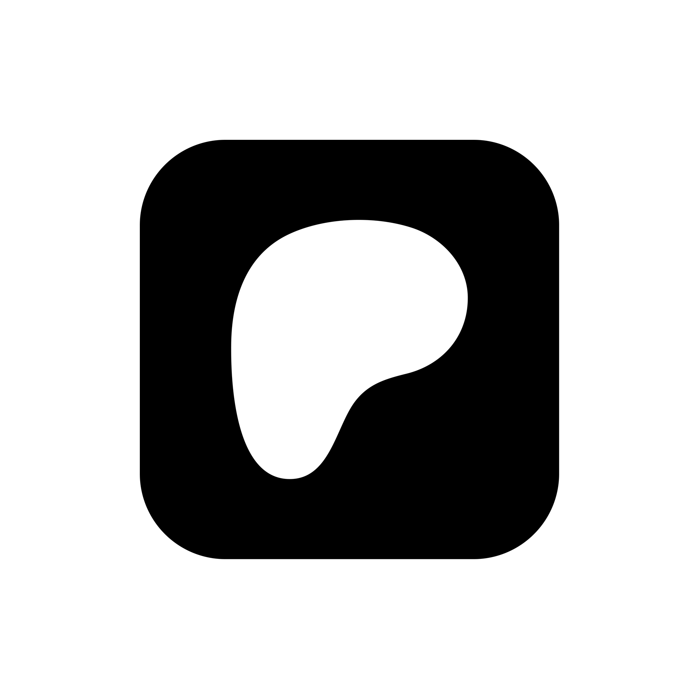

你好，我是 KmOS！ 專注於二次元角色插畫、原創與二創同人繪製。
平時會在 Pixiv 與 X (Twitter) 分享最新插畫作品；高畫質原圖、未公開草稿進度與限定差分則會定期更新於 FANBOX / Patreon / Fansky，歡迎加入 KmOS 奇妙小屋 一起交流！
點擊任意作品卡片即可直接前往該作品的 Pixiv 頁面

这个计划可以看到我公开的草稿进度(Fanbox專屬)

感谢您的支持！这杯咖啡会变成我的创作动力。 这个计划包括R18色情图片的0修高解像度版本和差分。另外，我也会不定期公开草稿与制作进度。

